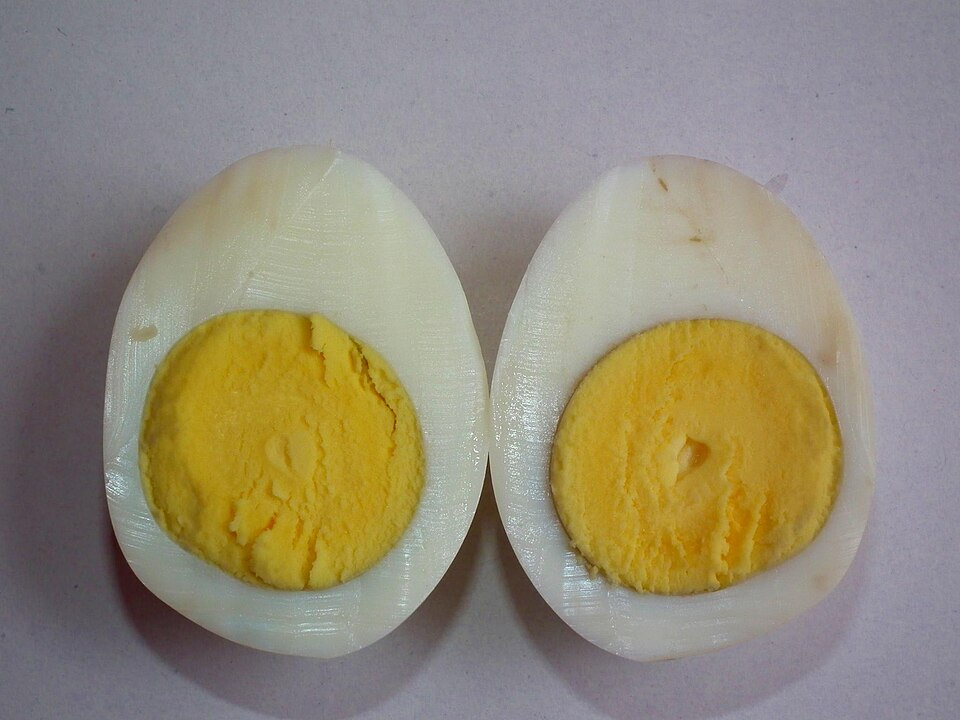

Breakfast, Snack, Prep, By Claude
12 large eggs, straight from the fridge
Large bowl of ice water
Optional marinade (soy-marinated eggs)
1/2 cup low-sodium soy sauce
1/2 cup water
1 tablespoon honey or mirin
1 garlic clove, smashed
Soft-set, custardy yolks that keep 5 days in the fridge. Use them on oats, rice bowls, salads, or as a snack.
Bring a large pot of water to a rolling boil. Use a slotted spoon to lower the cold eggs in gently, one at a time.
Set a timer: 6 1/2 minutes for jammy yolks, 7 1/2 for firmer jammy, 9 for fully set but still tender.
Move the eggs straight to the ice bath and leave them 5 minutes.
Peel under running water, starting at the wide end. Eggs a week or more old peel more easily.
Store peeled eggs in a covered container, or in the marinade (in a zip bag or jar) for 4+ hours. Use within 5 days.
140 CALORIES (2 eggs)
12G PROTEIN
10G FAT
1G CARBS
Photo: Boiled Egg - Crossection.jpg by Ramesh NG, CC BY-SA 2.0, via Wikimedia Commons. Representative image, not this exact recipe.